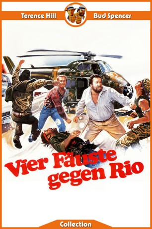

#4399 Vier Fäuste gegen Rio
 
 IMDB-Wertung: 7.2 / 10
IMDB-Wertung: 7.2 / 10  Metascore: 0
Metascore: 0 
Die beiden milliardenschweren Vetter Sebastiano und Antonio Coimbra wollen erneut ein Wahnsinnsgeschäft abschließen. Jedoch bangen die versnobten Geschäftsmänner aus Rio de Janeiro um ihr Leben, denn die Konkurrenz schreckt auch vor Mord nicht zurück. Kurzerhand engagieren sie mit dem Stuntman Elliot und dem bärbeißigen Jazz-Saxophonisten Greg für je eine Million Dollar zwei schlagkräftige Doppelgänger. Diese finden jedoch trotz aller Gefahren schnell Gefallen am Jet-Set-Leben – und warum sollten sie eigentlich auf ihren neu “erworbenen” Reichtum wieder verzichten?
Jahr: 1984
Dauer: 103 Minuten
FSK: 12
Land: Studio: Scotia International FilmverleihTonspuren:
Untertitel:
Auflösung: 1080p (1920x1080) Größe: 8570 MB
Genre: Action, Komödie
Regisseur: Enzo Barboni
Drehbuch: Dario Argento
Soundtrack:
Darsteller:
 Terence Hill als Eliot Vance / Bastiano Coimbra de la Coronilla y Azevedo
Terence Hill als Eliot Vance / Bastiano Coimbra de la Coronilla y Azevedo Bud Spencer als Greg Wonder / Antonio Coimbra de la Coronilla y Azevedo
Bud Spencer als Greg Wonder / Antonio Coimbra de la Coronilla y Azevedo- April Clough als Olympia Chavez
- Harold Bergman als Managing director of the 'double agency'
- C.V. Wood Jr. als Officier de police
- Dary Reis als Chef des mercenaires
 Nello Pazzafini als Tango
Nello Pazzafini als Tango- José Van de Kamp als Majordome
- Fernando Amaral als Secrétaire
- Roberto Roney als Nadino
- Athayde Arcoverde als Vinicio
- Claudioney Penedo als
- Dennis Bourke als Doctor
- Giancarlo Bastianoni als Tango's Thug / Mercenary , uncredited
- Franco Sattamini als Tango's Thug / Mercenary , uncredited
- Sergio Smacchi als Tango's Thug / Mercenary , uncredited
- Franco Ukmar als Tango's Thug , uncredited
Datei: X:\Person\Bud Spencer + Terence Hill\Vier Fäuste gegen Rio (1984, FSK12, 1920x1080).mkv seit 13.09.2016
Festplatte: HD Collection-7+mehr(A-Z)+Person
 Es gibt insgesamt 43 Filme in der Gruppe 'Person\Bud Spencer + Terence Hill'
Es gibt insgesamt 43 Filme in der Gruppe 'Person\Bud Spencer + Terence Hill'